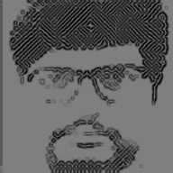
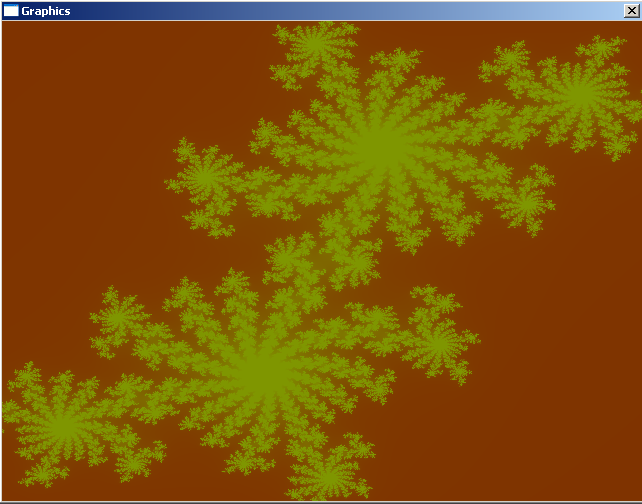

About

Mayur Hemani
* Love Computer Programming.
* Fascinated by 2D/3D Graphics.
* Interested in Science and Research.
* Work in Computer Vision and Retrieval.
LinkedIn Profile
Blog
* Love Computer Programming.
* Fascinated by 2D/3D Graphics.
* Interested in Science and Research.
* Work in Computer Vision and Retrieval.
LinkedIn Profile
Blog
Currently
* Full-time in CV Research+Engineering
* Wrapping my head around deep RL.
* Full-time in CV Research+Engineering
* Wrapping my head around deep RL.
Current Projects
Soon..
Past Projects
Fractals with TinyBGI
Code
Code
BGI was what got me into C++ programming some 20 years back. A few years ago, while still on Win32, I found this little library called OpenBGI and indulged(yes) in some code. Much later, those programs are now replicated using OpenCV culminating in this subset of BGI that i found myself using all the time.

Leadership Evolution
A speculative animation of how contact-based leadership may evolve a following over time. Leader is green. Followers are yellow. Contact of a leader with a red entity causes it to convert to a follower with 70% prob.